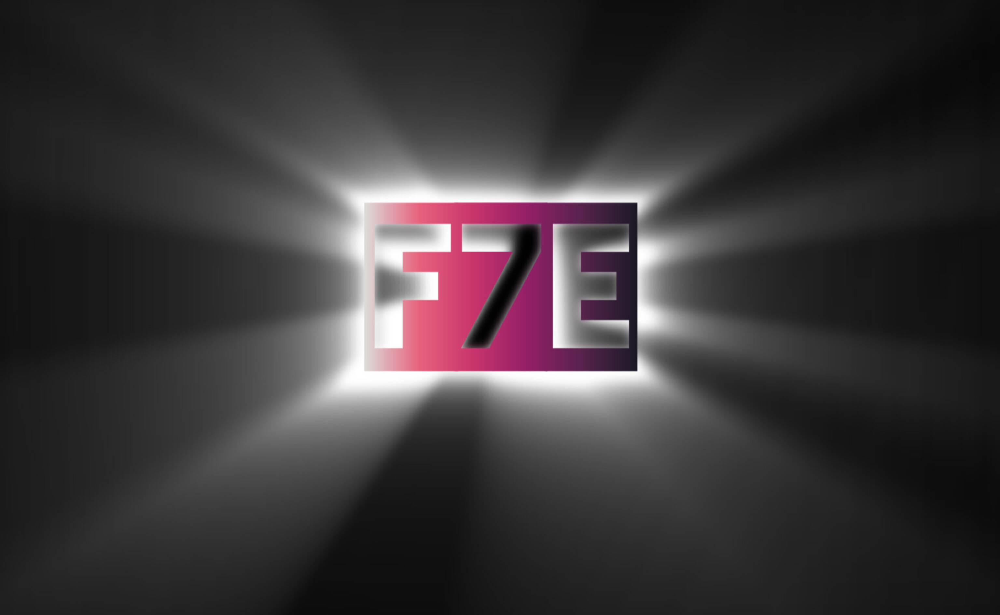

Faction Seven Entertainment
Focus, Dedication, and Third Party Software™
Tools:
PATHadder
A single-function application that lets you browse for a file or folder to add to the system PATH variable. Written in Python and packaged with CppPy_InstallerWrapper.
TranslationShell
A lightweight Windows API for Google Translator. Written in Python using deep_translator and packaged with PyInstall.
CppPy_InstallerWrapper
A barebones cmd interface for PyInstall. Detects PyInstall location, or defaults to most likely install;
Useful if your Command Prompt can't find PyInstaller in the system's PATH. Written in C++.
CSS Style Sheets
These are a few templates I used to style my sites. Written mostly by GPT3/4o "Saorse".
- forest.css - A page theme reminiscent of a quiet forest.
- river.css - A river theme colored like flowing water and sandy banks.
- tavern.css - Give your page a rustic tavern feel.
- tsf-theme.css - The main page theme for The Silver Flask.
C++PandorA
A language library that allows programmers to write code in French, Spanish, German, Russian, Hindi, or Japanese.
Code::Blocks install tutorial
A brief overview of C++ and getting started programming with Code::Blocks (my first video, be nice)
Global_Utils
A collection of helpful C++ functions for manipulating strings, generating random numbers, formatting console text, and more.